讀譜、樂理與指板
第 12 章・建議學習 2 小時
Notation, Fretboard Logic, Positions, Scales and Transposition（記譜、指板邏輯、把位、音階與移調）
本章重點
- 標準調弦是 G3–D4–A4–E5，用高音譜號、實音記譜，和小提琴空弦相同。
- 五度調弦有一個超好用的規律：第 7 格＝下一條弦的空弦音。
- 第 12 格＝空弦的八度，位置大約在有效弦長的一半。
- TAB（指法譜）告訴你「按哪裡」，但不告訴你「這是什麼音、什麼調」。
- 同一個音在指板上常有好幾個位置；選哪一個是配器決策，不是唯一答案。
曼陀林有琴格、又是五度調弦，看起來比無格弦樂器容易找音。
但很多學習者卡住的地方，其實不是「找不到音」。
更準確地說，是無法把五線譜、指板位置、把位和音樂語法連成同一張地圖。
這兩種學習方式各有盲點：
| 學習方式 | 好處 | 容易失去什麼 |
|---|---|---|
| 只靠 TAB | 可以很快彈出一首曲子 | 調性、節奏、聲部、轉調能力 |
| 只背五線譜音名 | 知道每個音叫什麼 | 每看到一個音都要重新算手指位置 |
十九世紀的 Carlo Munier《曼陀林學校》（Scuola del Mandolino）和 Raffaele Calace 的方法，都把第一把位、之後的把位與技法建立成系統。
這說明專業曼陀林教育從很早就把讀譜、位置與音樂表現一起學。〔S717〕〔S718〕
本章會從標準的 G–D–A–E 指板出發。
順序是：先建立音名與音程，再進入把位、音階、調號、移調和家族記譜。
目標是：讓你在沒有 TAB 的情況下，仍然知道音樂正在做什麼。
12.1 五線譜與四組弦
標準曼陀林調弦是 G3–D4–A4–E5。
通常用高音譜號（treble clef）、實音記譜（sounding pitch）。
CMSA（美國古典曼陀林協會）的家族記譜指南把這點列得非常明確。
由於空弦和小提琴相同，許多小提琴聲部可以直接讀音高，不需要整段移調。〔S716〕
初學時最有效的方法，是先把四條空弦當錨點，再用半音上行填滿第一把位。
來源舉的例子是：
| 弦 | 0–2–4 格 |
|---|---|
| G 弦 | G–A–B |
| D 弦 | D–E–F♯ |
逐步把譜上常見的音，和手指位置綁在一起。
這種「從弦出發」的方法，比每次從中央 C 數線和間要快得多。
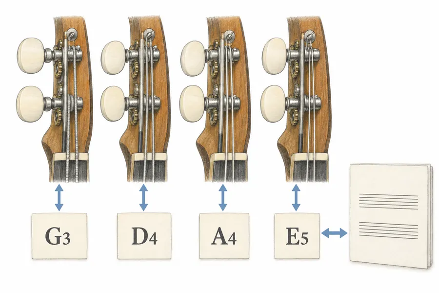
圖解 12.1 四組複弦的局部與空弦音名（示意）
讀譜還要同時看節奏（rhythm）。
曼陀林的起音（attack）很清楚。
所以節奏錯誤，比某些長音樂器更容易被聽見。
因此視奏時要優先維持拍點。
即使暫時漏掉一兩個裝飾音，也比「音全對但節拍崩掉」實用得多。
| 重點與應用 | 內容 |
|---|---|
| 核心概念 | 標準 mandolin tuning 是 G3–D4–A4–E5，通常用 treble clef、實音記譜。 |
| 關係與條件 | 初學時最有效的方法重點在先把四根 open course 當錨點，再用半音上行填第一把位。 |
| 應用方向 | 讀譜與找到指板位置。 |
12.2 TAB 的閱讀與使用
TAB（指法譜）直接告訴你在哪根弦、哪一格按。
對快速入門非常有效。
但它通常不會主動告訴你三件事：音名、調性功能、最佳替代位置。
如果 TAB 只有數字、沒有完整的節奏，讀者甚至必須靠錄音去猜節拍。
同一音在曼陀林上常有多個位置。
來源舉的例子是：某個 A 可以在空弦 A，也可以在D 弦第 7 格。
TAB 選定其中一個位置，就把音色、換弦與把位選擇一起決定了。
五線譜只給音高，演奏者則保留詮釋空間。
高階演奏最需要的，正是這種選擇能力。
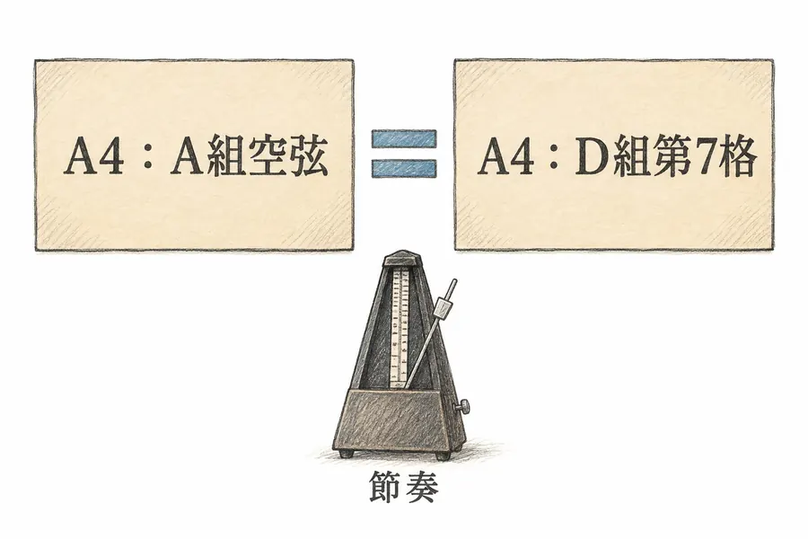
圖解 12.2 TAB 的閱讀與使用（示意）
兩種譜各有專長：
| 譜種 | 擅長 |
|---|---|
| TAB | 標示指板位置 |
| 五線譜 | 音高與樂句資訊 |
搭配使用，就能同時讀到兩邊的資訊。
學習新曲時，可以這樣做：
- 先用 TAB 建立手感。
- 再逐步遮掉 TAB，只看五線譜。
- 最後應該能理解：這段音樂在什麼調、和聲走向在哪裡。
| 重點與應用 | 內容 |
|---|---|
| 核心概念 | TAB 直接告訴你在哪根弦、哪一格按，對快速入門非常有效。 |
| 關係與條件 | 同一音在曼陀林上常有多個位置。 |
| 應用方向 | 讀譜與找到指板位置。 |
12.3 十二平均律與琴格間距
十二平均律（twelve-tone equal temperament）的定義很簡單：
每升一個半音（semitone），頻率乘上 2^(1/12)。
弦長和頻率近似成反比。
所以第 n 格到 nut 的理論位置是：
x = L ×（1 − 2^(−n/12)）
其中 L 是有效弦長。
第 12 格剛好是 L/2。
因為一個八度頻率加倍，弦長就減半。
以 335 mm 弦長為例：
| 琴格 | 距 nut 的理論距離 |
|---|---|
| 第 1 格 | 約 18.8 mm |
| 第 5 格 | 約 84.0 mm |
| 第 7 格 | 約 111.4 mm |
| 第 12 格 | 正好 167.5 mm（＝L/2） |
越往琴身，剩餘的有效弦長越短。
所以相鄰琴格的距離，自然會逐漸縮小。
這就是平均律的幾何。
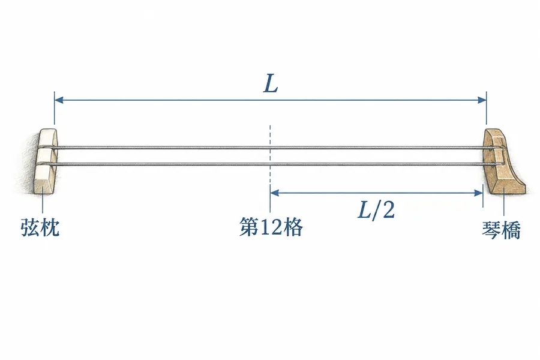
圖解 12.3 理想弦長減半的幾何關係，以單組複弦示意（示意）
但計算出正確的琴格位置，只完成了一半。
真實的弦按下去會拉伸，所以琴橋補償仍然必須修正。
如果琴格頂冠（crown）太寬，或磨耗不均，實際發音點也可能偏離理論線。
樂理和設定（Setup）就在這裡直接相遇。
| 重點與應用 | 內容 |
|---|---|
| 核心概念 | 十二平均律每升一個半音，頻率乘上 2^(1/12)。 |
| 關係與條件 | 以 335 mm scale 為例，第一格約離 nut 18.8 mm，第 5 格約 84.0 mm，第 7 格約 111.4 mm，第 12 格正好 167.5 mm。 |
| 應用方向 | 讀譜與找到指板位置。 |
12.4 全指板音名
五度調弦最大的優點，是相鄰弦之間有穩定的幾何關係。
| 關係 | 內容 |
|---|---|
| D 是 G 的上五度 | 高五個音級 |
| A 是 D 的上五度 | 高五個音級 |
| E 是 A 的上五度 | 高五個音級 |
若在 G course 找到某個音，它的八度、五度與同名音，可以透過固定的琴格關係在其他 course 找到。
最能馬上用的是這個規律：
「7 格＝下一條 open course」
| 在這一條弦 | 第 7 格是 | 等於 |
|---|---|---|
| G course | D | 下一條 D 的空弦 |
| D course | A | 下一條 A 的空弦 |
| A course | E | 下一條 E 的空弦 |
這個規律，是快速移動和跨弦視覺化的核心。
相反方向，則可以用五度關係找低音版本。
E course 上方沒有下一條弦，所以這個規律到此為止。
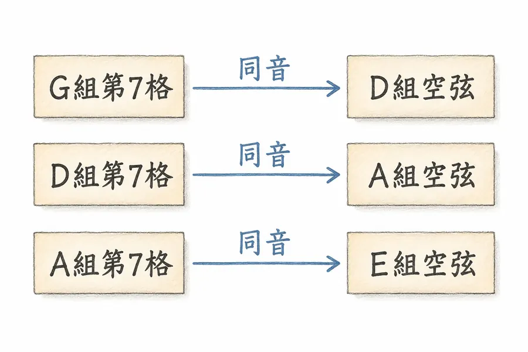
圖解 12.4 全指板音名（示意）
指板記憶應該優先建立地標（landmarks）：
- 空弦（open strings）
- 第 5／7 格
- 第 12 格
- 常見調號的音階位置
當這些點變成直覺，剩下的半音就能用相對位置推導。
一步一步，串起整張指板地圖。
| 重點與應用 | 內容 |
|---|---|
| 核心概念 | 五度調弦最大的優點，是相鄰弦之間有穩定的幾何關係。 |
| 關係與條件 | 例如 G course 第 7 格是 D，正好等於下一條 D open。 |
| 應用方向 | 讀譜與找到指板位置。 |
12.5 音程與雙音
音程（interval）描述兩個音之間的距離。
對曼陀林而言，有四種音程特別重要：
| 音程 | 中文 | 為什麼重要 |
|---|---|---|
| perfect fifth | 完全五度 | 和調弦方式直接相關 |
| third | 三度 | 決定大調／小調的色彩 |
| sixth | 六度 | 旋律配和聲（harmonization）的常用形狀 |
| octave | 八度 | 幫助換把、重新配置同一旋律 |
把音程畫成「指板形狀」，比單純背音名更有效率。
某個大三度形狀（major third shape）平移到另一個根音，只要不跨越調弦例外（tuning anomaly），幾何關係仍然一致。
這裡說的例外，是指像吉他那種 B–G 之間的特例。
曼陀林沒有這種特例。
這正是五度調弦在「全調系統」上的優勢。
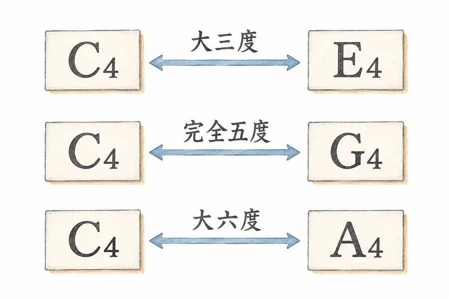
圖解 12.5 音程與雙音（示意）
學習雙音（double stop）的順序應該是：
- 先理解音程。
- 再沿著音階練習不同組合。
- 先知道三度和六度如何沿音階變成大／小。
- 再理解聲部進行（voice leading）。
之後任何調都能自己推導。
| 重點與應用 | 內容 |
|---|---|
| 核心概念 | 音程描述兩個音之間的距離。 |
| 關係與條件 | 把音程畫成「指板形狀」比單純背音名更高效。 |
| 應用方向 | 讀譜與找到指板位置。 |
12.6 音階與把位
大調音階（major scale）的全半音結構是：
W–W–H–W–W–W–H（全–全–半–全–全–全–半）
這是調號、和弦與旋律的共同基礎。
其他音階是在這個基礎上，改變特定級數：
| 音階 | 中文 |
|---|---|
| natural minor | 自然小調 |
| harmonic minor | 和聲小調 |
| melodic minor | 旋律小調 |
| modes | 調式 |
練音階如果只追速度，就失去了它最重要的作用：
讓耳朵、手和調性結構連在一起。
第一把位音階適合建立基本音名。
但高階演奏需要跨把位。
把同一個 G 大調，分別用三種方式演奏：
| 方式 | 特點 |
|---|---|
| 空弦第一把位 | 用 open string |
| 封閉把位（closed position） | 不用空弦 |
| 高把位 | 位置更高 |
音高一樣。
但音色、換弦和圓滑奏（legato）可能完全不同。
演奏者應該知道自己為什麼選某一套指法。
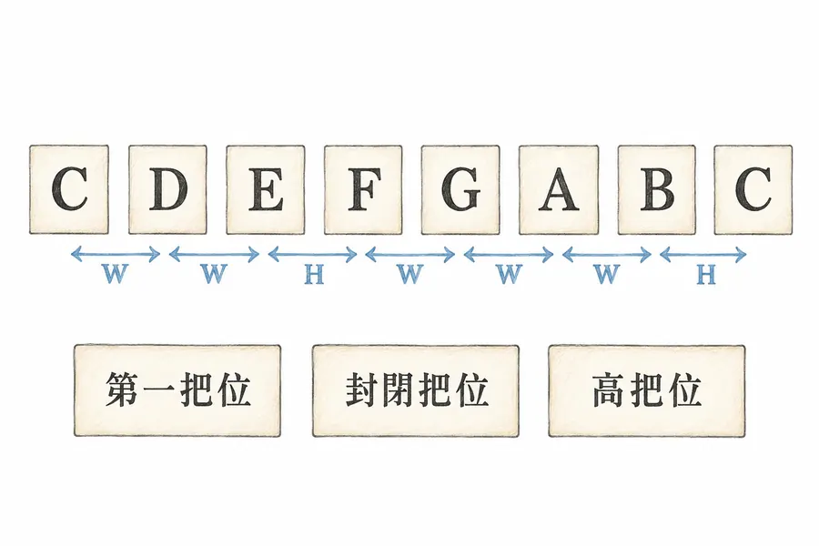
圖解 12.6 音階與把位（示意）
Munier 1891 年的方法，特別強調先掌握第一把位，再進入其他把位。
這反映歷史教學也把把位當作系統，而不是零散的技巧。
現代學習可以更彈性。
但「先有穩定基本地圖，再擴展」仍然合理。〔S717〕
| 重點與應用 | 內容 |
|---|---|
| 核心概念 | Major scale 的全半音結構 W–W–H–W–W–W–H，是調號、和弦與旋律的共同基礎。 |
| 關係與條件 | 第一把位音階適合建立基本音名，但高階演奏需要跨把位。 |
| 應用方向 | 讀譜與找到指板位置。 |
12.7 把位與換把
所謂把位（position），本質上是左手在指板上的參考框架。
第一把位通常讓食指負責第一、二格附近的音。
移到更高把位後，同一根弦上的音就由不同手指接管。
換把（shift）的重點，是提前決定下一個落點和引導指（guide finger）。
把位選擇會改變音色與樂句處理（phrasing）。
| 選擇 | 效果 |
|---|---|
| 使用空弦 | 起音通常清楚，延音特性和按弦音不同 |
| 在較高把位用同一條弦 | 旋律音色可以更一致 |
| 快速民謠曲（fiddle tune） | 可能利用空弦減少換把 |
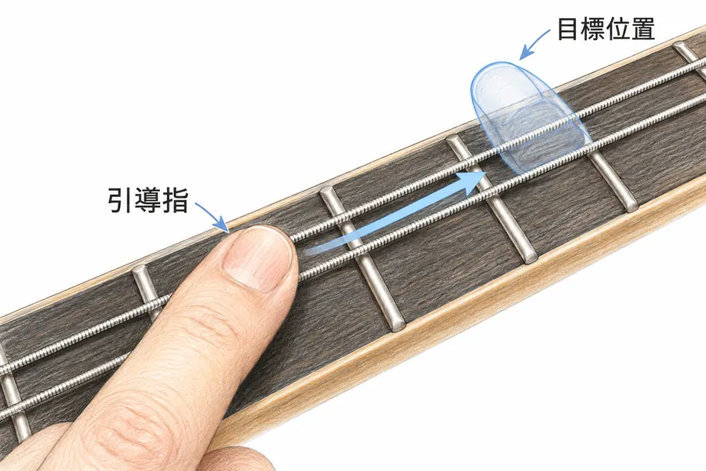
圖解 12.7 把位與換把（示意）
高把位還有一個物理事實：琴格間距變窄。
所以手指不需要像第一把位那麼張開。
如果仍然保持低把位的大伸展，反而容易按到相鄰的琴格，或造成緊張。
| 重點與應用 | 內容 |
|---|---|
| 核心概念 | 所謂 position，本質上是左手在指板上的參考框架。 |
| 關係與條件 | 把位選擇會改變音色與 phrasing。 |
| 應用方向 | 讀譜與找到指板位置。 |
12.8 調號與五度圈
五度圈（circle of fifths）能直接幫助理解曼陀林的調弦與調性。
G、D、A、E 正好沿著五度關係排列。
所以標準空弦本身就是一段五度圈。
對曼陀林而言，升號調因此往往有很自然的空弦共鳴和指法便利。
理解五度圈，能讓轉調更快。
| 調 | 增加的升號 | 累計 |
|---|---|---|
| G 大調 | — | — |
| D 大調 | 增加 C♯ | 1 個 |
| A 大調 | 再加 G♯ | 2 個 |
| E 大調 | 再加 D♯ | 3 個 |
與其背每個調的七個音，不如記住這個規律：
每往五度走一步，就多一個升號。
降號方向則反過來理解。
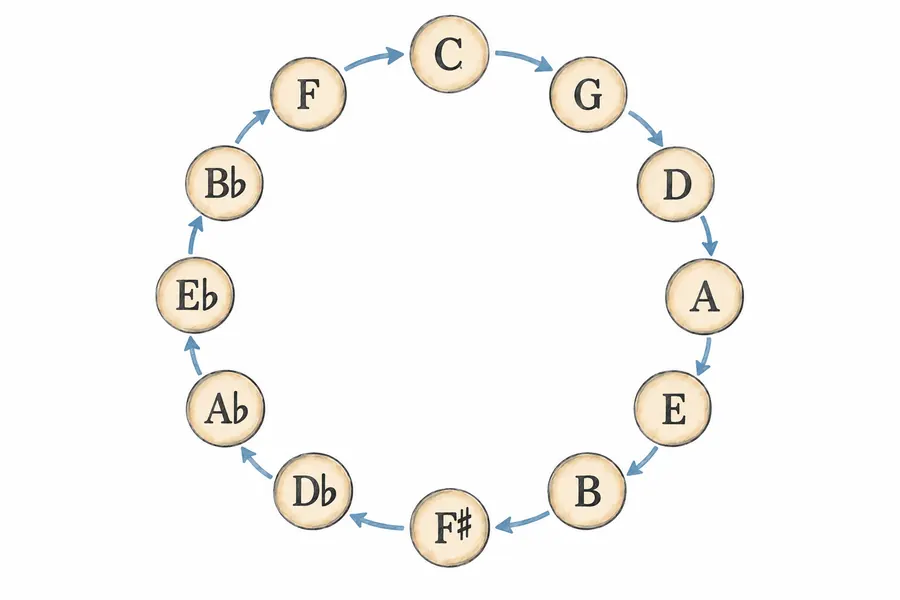
圖解 12.8 調號與五度圈（示意）
這也解釋了某些曲風為什麼偏好特定調。
民謠提琴／藍草（fiddle / bluegrass）曲目常喜歡 G、D、A、E。
這不只是文化慣例。
也因為空弦和五度調弦對這些調非常友善。
這是樂器結構和音樂語言互相塑造的例子。
| 重點與應用 | 內容 |
|---|---|
| 核心概念 | 五度圈能直接幫助理解曼陀林的調弦與調性。 |
| 關係與條件 | 理解五度圈能讓轉調更快。 |
| 應用方向 | 讀譜與找到指板位置。 |
12.9 家族樂器的記譜
CMSA 指南指出，美國與加拿大的 C 調曼陀拉（C-tuned mandola），常以中音譜號（alto clef）或不同的轉譜方式處理。
而世界其他地區所稱的 mandola／八度曼陀林（octave mandolin），又可能是 G2–D3–A3–E4。
其他成員也有各自的常見記譜法：
| 樂器 | 中文 | 記譜狀況 |
|---|---|---|
| mandocello | 曼陀琴 | 有各自常見記譜法 |
| Liuto Cantabile | 抒情魯特琴 | 有各自常見記譜法 |
| mando-bass | 曼陀貝斯 | 有各自常見記譜法 |
〔S716〕
這就是為什麼「看起來像同一個譜號」，還需要先問實音。
對編曲者而言，最安全的方法是：
- 先建立發聲音域（sounding range）。
- 再決定記譜慣例（notation convention）。
把小提琴聲部移給 C 調曼陀拉時，要依它的空弦與指板關係重新安排指法。
圖解 12.9 家族樂器的記譜（示意）
跨國樂團尤其要注意。
總譜開頭應該清楚標註調弦（tuning）和移調（transposition）。
常見誤解：「寫出樂器名稱就夠了。」
不夠。「曼陀拉」這個詞的地域差異很大。
單寫樂器名，不足以避免排練時的誤會。
| 重點與應用 | 內容 |
|---|---|
| 核心概念 | CMSA 指南指出，美國與加拿大的 C-tuned mandola 常以 alto clef 或不同轉譜方式處理。 |
| 關係與條件 | 對編曲者而言，最安全的方法是先建立 sounding range，再決定 notation convention。 |
| 應用方向 | 讀譜與找到指板位置。 |
12.10 小提琴樂譜的移植
因為標準調弦相同，曼陀林常可以直接閱讀小提琴高音譜號的音高。
但實際演奏時，會遇到三個問題：
| 小提琴寫法 | 曼陀林必須決定 |
|---|---|
| 長的持續音（sostenuto） | 用顫音、重新起音（rearticulation），還是讓音自然衰減 |
| 連弓（slur） 依賴弓向 | 撥弦模式不能照字面翻譯 |
另一方面，曼陀林有琴格和複弦。
某些快速段落反而可以利用交替撥弦（alternate picking）和空弦，取得清楚的發音（articulation）。
所以移植的重點是：重新配器。
CMSA 甚至指出，曼陀林演奏者可能直接讀原小提琴聲部。
這代表音高層面很方便。
但不代表演奏語法相同。〔S716〕
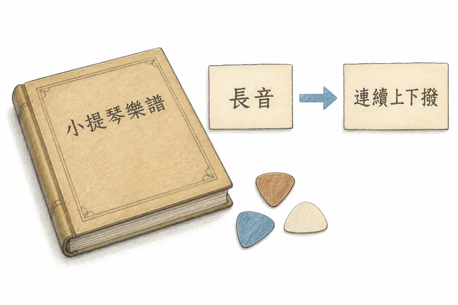
圖解 12.10 小提琴樂譜的移植（示意）
最好的練習是拿一段小提琴旋律，做兩個版本：
- 第一版：完全照音高讀。
- 第二版：重新安排顫音、空弦、換把和發音。
比較兩版，就會知道「讀譜」和「編成適合曼陀林」是兩個層次。
| 重點與應用 | 內容 |
|---|---|
| 核心概念 | 因標準 tuning 相同，mandolin 常可直接閱讀 violin treble-clef pitch。 |
| 關係與條件 | 另一方面，mandolin 有 frets 和 double courses，某些快速 passage 反而可以利用 alternate picking 和 open strings 取得清楚 articulation。 |
| 應用方向 | 讀譜與找到指板位置。 |
12.11 案例：同一旋律的指法選擇
假設旋律落在 A4–E6。
三種指法都彈得出來，但效果不同：
| 指法 | 做法 | 效果 |
|---|---|---|
| 第一種 | 大量使用空弦 A／E | 換把少、起音明顯 |
| 第二種 | 留在 A course 和較高把位 | 音色更一致、圓滑奏更容易 |
| 第三種 | 為了接雙音（double stop），提前換到封閉把位 | 銜接更順 |
音高完全相同，音樂效果卻不同。
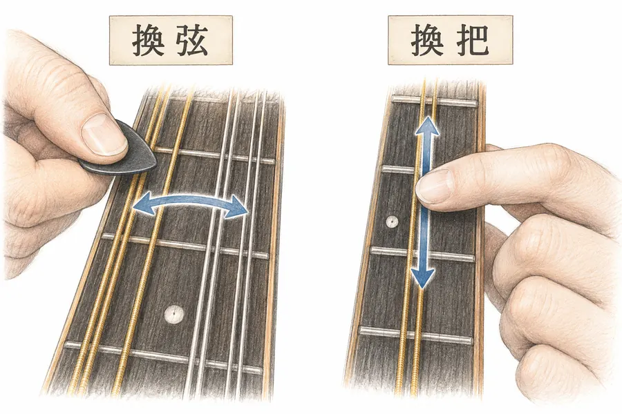
圖解 12.11 案例 同一旋律的指法選擇（示意）
這正是譜面不能把所有答案寫死的原因。
常見誤解：「TAB 標一格，就是唯一正確的按法。」
初學時常會這樣誤會。
但專業指法其實是配器決策。
要考慮：前後樂句、動態、音色、換弦，以及下一個和弦。
練習時可以故意把同一段 4–8 小節做成三套指法，錄音比較。
最重要的目標，是建立你能說明選擇理由的能力。
| 重點與應用 | 內容 |
|---|---|
| 核心概念 | 假設旋律落在 A4–E6。 |
| 關係與條件 | 這正是譜面不能把所有答案寫死的原因。 |
| 應用方向 | 讀譜與找到指板位置。 |
12.12 案例：旋律移調與指型
如果一段旋律在 G 大調，想把每個琴格加兩格移到 A 大調，看起來很簡單。
但遇到空弦、把位邊界和音域時，很快就會變得不實用。
更穩定的方法是：
- 先把旋律理解成音級（scale degrees），例如 1–2–3–5。
- 再在新調重新找位置。
這種功能思維也適合和弦。
| 原進行 | 在 G 調 | 移到 A 調 |
|---|---|---|
| I–IV–V | G–C–D | A–D–E |
只背手型，容易把轉調變成機械式的搬格。
理解功能，則能直接連到伴奏和即興。
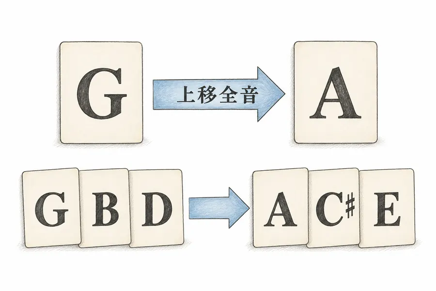
圖解 12.12 案例 旋律移調與指型（示意）
五度調弦讓封閉指型（closed shapes）的平移相對規律。
所以兩種方法可以結合：
- 先用功能找到目標音。
- 再利用可移動的幾何，快速落到指板上。
這就是「樂理的目的，是讓手更快找到答案」。
表 12-1｜指板記憶的幾個核心 Landmark（地標）
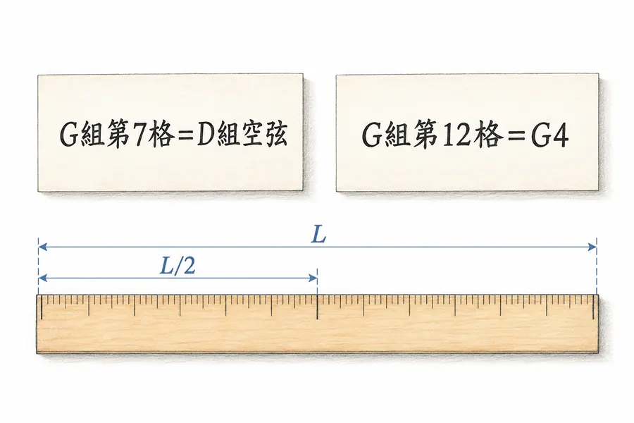
| 位置關係 | 意義 | 實務用途 |
|---|---|---|
| 7 fret = 下一條 open course（第 7 格＝下一條空弦） | 完全五度關係 | 快速找同音／換弦 |
| 12 fret = open string 八度（第 12 格＝空弦八度） | scale length 的一半（有效弦長的一半） | 把位與 intonation |
| 5th/7th fret 周邊（第 5／7 格附近） | 常見自然音與位置標記 | 視奏與換把 |
| Closed shape 可平移（封閉指型可平移） | 五度調弦幾何一致 | 移調、和弦、雙音 |
圖解 表 12-1｜指板記憶的幾個核心 Landmark（示意）
| 【指板公式】 第 n 格距 nut 的理論位置：x = L × (1 − 2^(−n/12))。第 12 格必為 L/2；實際琴橋仍需 compensation。 |
|---|
| 【歷史教學】 Munier 1891《Scuola del Mandolino》明確把第一把位列為基礎，再進入其他把位與技巧。這說明把位系統不是現代教科書才發明的概念，而是金屬弦那不勒斯曼陀林成熟教育的一部分。 |
|---|
自我學習題庫

學習檢查：作答、核對、複習
先自己作答，再看答案。答錯時回到本章相關小節重新讀一次。
1. 標準曼陀林的調弦關係主要是？
-
A. 連續五度
-
B. 連續四度
-
C. 連續三度
-
D. 任意調弦
2. TAB 的主要限制之一是？
-
A. 不能告訴你指板位置
-
B. 常無法完整呈現樂理、節奏與聲部資訊
-
C. 不能寫數字
-
D. 只適合鋼琴
3. 第 12 格通常代表？
-
A. 有效弦長的一半位置附近
-
B. 琴身中心
-
C. 一定是最高音
-
D. 尾弦板位置
答案：1.A 2.B 3.A
本章主要查證來源

查證來源：找原文、核條件、留紀錄
【S716】Robert A. Margo / Classical Mandolin Society of America：Music Notation for Mandolin Family Instruments（v3, 2019）。 曼陀林家族標準調弦、譜號、實音／移調記譜與地域名稱差異。
https://classicalmandolinsociety.org/wp-content/uploads/Music_Notation_for_Mandolin_Family_Instruments_v3.pdf
【S717】Carlo Munier：Scuola del Mandolino（Firenze: Adolfo Lapini, 1891）。 19 世紀末完整曼陀林教本；第一把位、姿勢、顫音、進階把位與裝飾技法等歷史演奏證據。
https://imslp.org/wiki/Scuola_del_Mandolino_(Munier%2C_Carlo)
【S718】Raffaele Calace：Metodo per mandolino, Opp.37–42（Edizioni Calace, public-domain scans）。 六冊曼陀林教本；歷史指法、把位、技巧與音樂語法參照。
https://imslp.org/wiki/Metodo_per_mandolino_(Calace%2C_Raffaele)
【S715】D'Addario：A Complete Technical Reference for Fretted Instrument String Tensions（technical guide）。 弦張力與 unit weight、scale length、frequency 的關係與公式。
https://www.daddario.com/globalassets/pdfs/accessories/tension_chart_13934.pdf